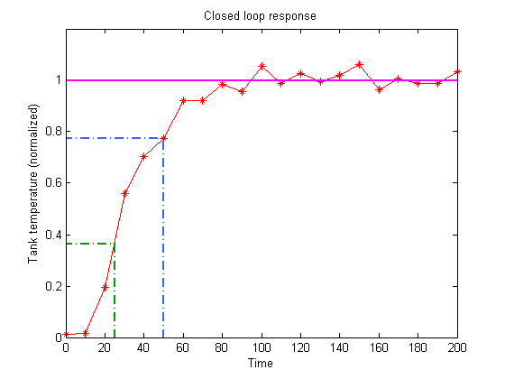

This is an example of how to add lines to a plot in MATLAB®.
Read about the line function in the MATLAB® documentation.
Go to MATLAB Plot Gallery
% Load the step response data load stepResponse step_data; % Plot the step response figure; plot(step_data(:,1), step_data(:,2), 'r*-'); % Set the axis limits axis([0 200 0 1.2]); % Add a title and axis labels title('Closed loop response'); xlabel('Time'); ylabel('Tank temperature (normalized)'); % Add a horizontal line for the Temperature at steady state line('XData', [0 200], 'YData', [1 1], 'LineStyle', '-', ... 'LineWidth', 2, 'Color','m'); % Add lines for the temperature at time = 25 x = 25; y = (step_data(4,2) - step_data(3,2)); line('XData', [x x 0], 'YData', [0 y y], 'LineWidth', 2, ... 'LineStyle', '-.', 'Color', [0 0.6 0]); % Add lines for the temperature at time = 60 x = 50; y = step_data(6,2); line('XData', [x x 0], 'YData', [0 y y], 'LineWidth', 2, ... 'LineStyle', '-.', 'Color', [0.2 0.4 1.0]);